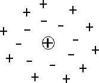

Carica elettrica
Forza elettrostatica
Se poniamo due masse puntiformi m ed M a una certa distanza r, sappiamo che tra queste due masse si crea una forza di gravitazione universale la cui intensità è F = G m1 m2 / r2, dove G è la costante di gravitazione universale: G = 6.67 · 10-11 N · m2 / kg2. Le masse m ed M sono grandezze scalari positive e la forza di gravitazione universale tra le due masse è sempre una forza attrattiva.
Cosa succede invece se poniamo due cariche elettriche puntiformi Q1 e Q2 a una certa distanza r? Anche in questo caso tra le due cariche Q1 e Q2 si crea una forza elettrostatica la cui intensità è regolata da una formula simile a quella della forza di gravitazione universale: F = k Q1 Q2 / r2. La costante k è una costante di proporzionalità che nel vuoto assume il valore k0 = 9 · 109 N · m2 / C2. Dunque la forza elettrostatica F raddoppia al raddoppiare della carica Q1 o della carica Q2, mentre diventa quattro volte più piccola al raddoppiare della distanza r.
La differenza fondamentale tra la forza di gravitazione universale e la forza elettrostatica è che, a differenza delle masse, le cariche elettriche possono avere anche segno negativo. Come conseguenza abbiamo che la forza elettrostatica può essere sia attrattiva che repulsiva. Tutto dipende dai segni delle cariche: se le cariche hanno lo stesso segno la forza risulta repulsiva, se invece i segni sono opposti la forza elettrostatica risulta essere attrattiva.
La legge che ci permette di ottenere l'intensità della forza elettrostatica F = k0 Q1 Q2 / r2, detta anche legge di Coulomb, consente anche di definire l'unità di misura della carica elettrica nel Sistema Internazionale, ossia il coulomb (simbolo: C). Due cariche valgono 1 C se, poste nel vuoto alla distanza di 1 m, interagiscono tra loro con una forza di intensità pari a 9 · 109 N.
Una volta che abbiamo chiarito qual è l'unità di misura nel Sistema Internazionale della carica elettrica la carica elettrica dell'elettrone viene ad essere Qe = -1.6 · 10-19 C. La carica del protone presente nei nuclei degli atomi è invece uguale ed opposta a quella dell'elettrone, ossia Qp = 1.6 · 10-19 C. Questo ci dice che c'è una forza di attrazione tra i nuclei, carichi positivamente, e gli elettroni, carichi negativamente. Dunque gli elettroni, in assenza di altre forze, tenderebbero a collassare sul nucleo. Fu per questo che Rutherford prima e Bohr poi proposero il loro modello di atomo, in cui è la forza centripeta dovuta alla rotazione degli elettroni attorno al nucleo che consente di bilanciare la forza elettrostatica e di avere un sistema stabile.
Prima di concludere questa sezione vogliamo vedere cosa succede se invece di avere due cariche elettriche nel vuoto abbiamo due cariche elettriche in un mezzo materiale. In generale, la forza elettrica in un mezzo è minore rispetto alla forza elettrica presente tra le stesse cariche nel vuoto. Esiste una costante, detta costante dielettrica relativa che si indica con εr e che ci permette di quantificare di quanto la forza nel mezzo è minore rispetto al vuoto. Infatti in un mezzo la costante di proporzionalità che compare nella legge di Coulomb è data da k = k0 / εr. (ε è la lettera greca epsilon). La costante εr dipende dalla particolare sostanza con cui abbiamo a che fare ed è un numero sempre maggiore di 1. Ad esempio nell'acqua εr = 80, nel vetro la costante dielettrica relativa è compresa tra 5 e 15.
Il fenomeno fisico per cui la forza elettrostatica nel mezzo è minore rispetto al vuoto va sotto il nome di induzione elettrostatica: se abbiamo una carica elettrica positiva posta in un mezzo, le cariche elettriche negative presenti nel mezzo (gli elettroni) si orienteranno in modo da circondare la carica positiva e da schermarne l'effetto. Di conseguenza la forza elettrostatica che tale carica positiva riesce a generare risulta essere inferiore rispetto al vuoto.

Notiamo come la presenza della carica positiva abbia provocato una redistribuzione delle cariche elettriche nel mezzo che, pur rimanendo neutro nel suo complesso, presenta al suo interno una distribuzione di cariche elettriche non uniforme. Questo può essere visto come un terzo modo, oltre allo strofinio e al contatto, per elettrizzare un corpo.